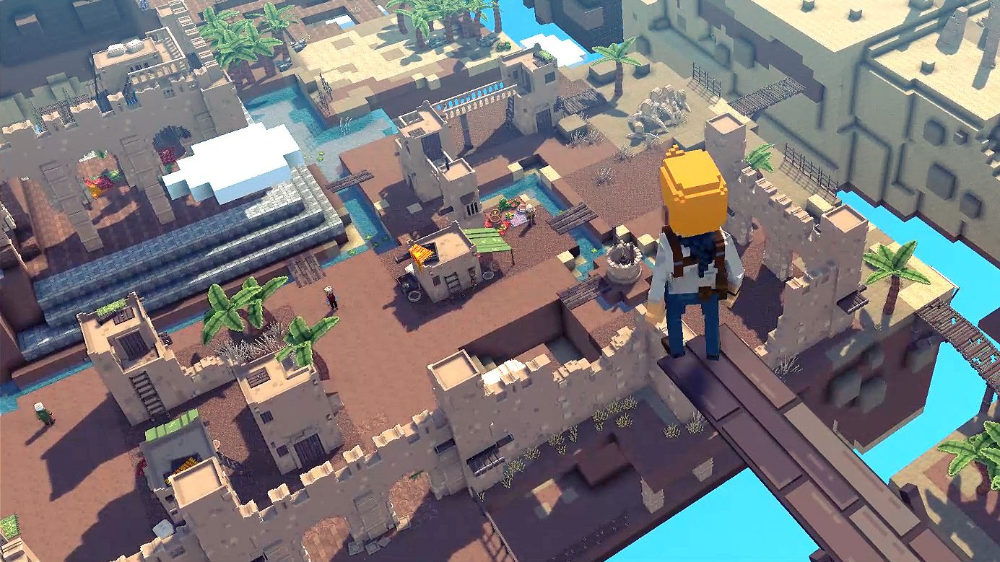
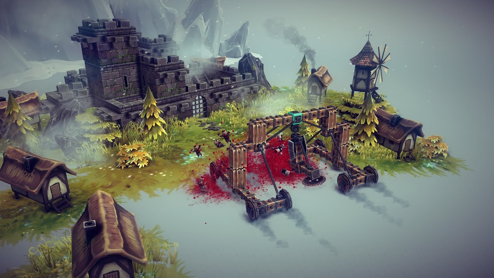
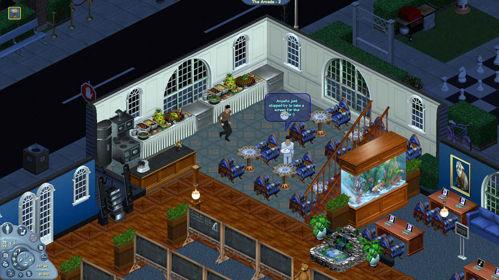
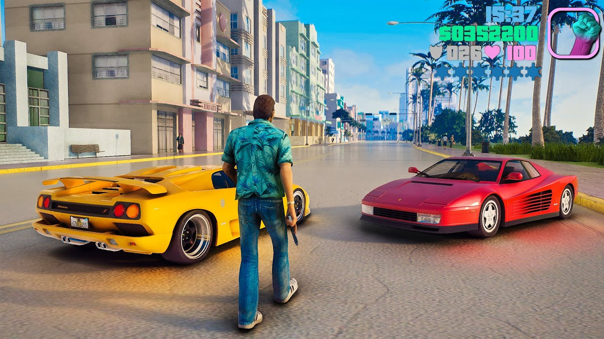
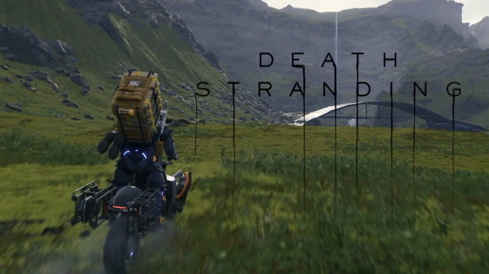
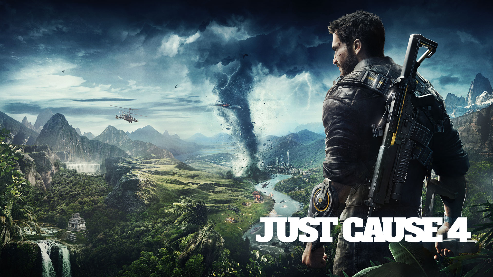
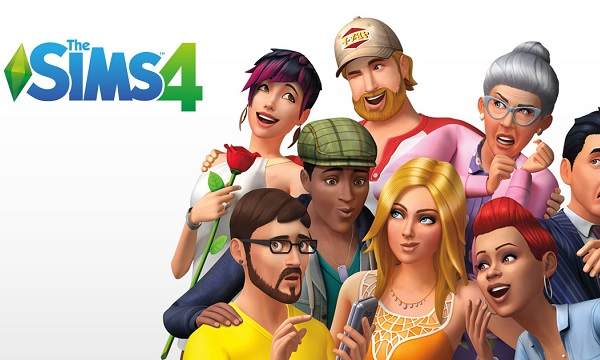

● Jocurile sandbox
Un joc sandbox este un joc video cu un element de joc care oferă jucătorului un grad mare de creativitate cu care să interacționeze, de obicei fără niciun scop prestabilit sau, alternativ, cu un obiectiv pe care jucătorul și-l stabilește. Asemenea jocuri pot lipsi orice obiectiv și sunt uneori denumite non-jocuri sau jucării software. Mai des, jocurile sandbox rezultă din încorporarea acestor elemente creative în alte genuri și permițând un joc emergent. Jocurile Sandbox sunt adesea asociate cu un concept de lume deschisă, care oferă jucătorului libertate de mișcare și de progres în lumea jocului. Termenul „cutie cu nisip” derivă din natura unei cutii cu nisip care le permite copiilor să creeze aproape orice doresc în ea.
Primele jocuri sandbox au apărut din jocurile de tranzacționare și luptă spațială precum Elite (1984) și simulări de construcție de orașe și jocuri de magnați precum SimCity (1989). Lansările The Sims și Grand Theft Auto III în 2000 și, respectiv, 2001, au demonstrat că jocurile cu sisteme de interacțiune foarte detaliate care încurajau experimentarea jucătorilor puteau fi văzute și ca jocuri sandbox. Jocurile Sandbox au găsit teren și capacitatea de a interacționa social și de a partaja conținut generat de utilizatori pe internet, cum ar fi Second Life (2003). Mai notabile jocuri Sandbox includ Garry's Mod (2006) și Dreams (2020), în care jucătorii folosesc sistemele jocului pentru a crea medii și moduri cu care să se joace. Minecraft (2011) este unul dintre cele mai de succes exemple de joc sandbox, cu jucători capabili să se bucure atât în moduri creative, cât și prin moduri de supraviețuire mai bazate pe obiective. Roblox oferă tuturor șansa de a-și crea propriul joc folosind limbajul de programare Roblox Lua. Permite adăugarea de efecte, configurarea funcțiilor, testarea jocurilor dvs. etc.
|  |  |
Două jocuri de la începutul secolului XXI redefinesc noțiunea de joc sandbox:
The Sims (2000) The Sims (2000) este un joc de simulare a vieții în care jucătorul interacționează cu oameni simulați într-o casă în timp ce își desfășoară viața de zi cu zi. Jocurile de simulare a vieții nu erau un gen nou, dar jocurile anterioare precum Little Computer People (1985) aveau o inteligență artificială foarte limitată dincolo de oamenii simulați, limitând cantitatea de interacțiuni pe care un jucător le avea cu simularea și făcând astfel de jocuri mai curiozități. Cu The Sims, oamenii simulați au primit un comportament mai detaliat și credibil bazat pe studii în viața artificială, ceea ce i-a determinat pe jucători să experimenteze mai mult cu oamenii simulați și să exploreze simulările. În ceea ce privește definirea sandbox-ului, The Sims a fost considerat un joc cu formă liberă, dar a adăugat seturi de obiective minime prin joc pentru a ghida jucătorul și a încuraja progresul. Sims a devenit un titlu cel mai bine vândut în Statele Unite în 2000 și o franciză de lungă durată pentru Electronic Arts. Ar urma și alte jocuri de simulare a vieții, cum ar fi Spore (2008) |
Grand Theft Auto III (2001) Grand Theft Auto III (2001) este un joc de acțiune și aventură în care jucătorul ia rolul unui escroc într-un oraș mare, completând diverse misiuni pentru șefi pe parcursul jocului. Acesta a fost primul joc din seria Grand Theft Auto în lume deschisă care a fost plasat într-o lume tridimensională, jocurile anterioare fiind jucate dintr-o perspectivă de sus în jos și primul joc care a inclus un motor fizic detaliat pentru diferitele interacțiuni dintre obiecte din lume. Combinația dintre lumea deschisă și sistemul fizic al jocului le-a oferit jucătorilor oportunitatea de a explora modul în care ar putea provoca ravagii în joc, făcând jocul un cutie de nisip virtual cu jucătorii cu care să se joace. În acest fel, Grand Theft Auto III a adăugat ideea jocului emergent ca o caracteristică a jocurilor sandbox. Grand Theft Auto III i-a succedat Sims ca cel mai bine vândut joc din Statele Unite în 2001; În plus față de sequelele sale de mare succes, Grand Theft Auto III a condus la un gen de clone derivate Grand Theft Auto concentrate pe activități criminale, cum ar fi seria Saints Row, precum și la o gamă largă de jocuri de acțiune și aventură în lume deschisă, cum ar fi seria Assassin's Creed și Far Cry. Acest joc de acțiune a extins așteptările de la un sandbox, un concept care anterior era rezervat experiențelor precum SimCity. |
|  |  |
Cele mai mari jocuri sandbox:
|  |  |
 |
 |
 |